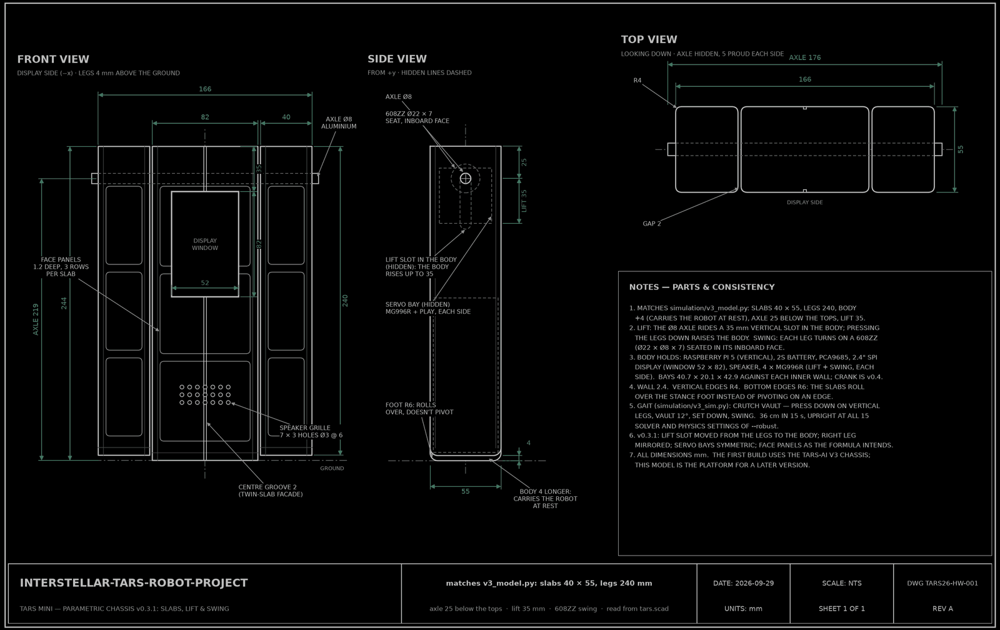
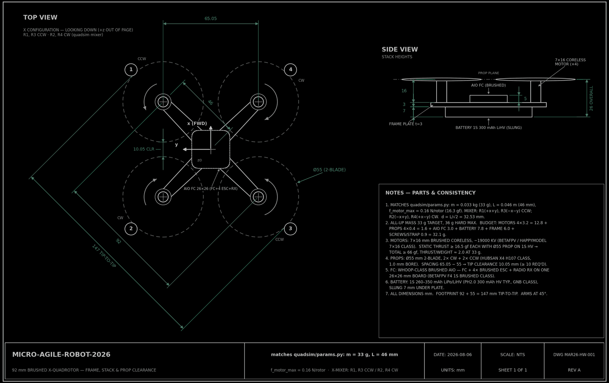
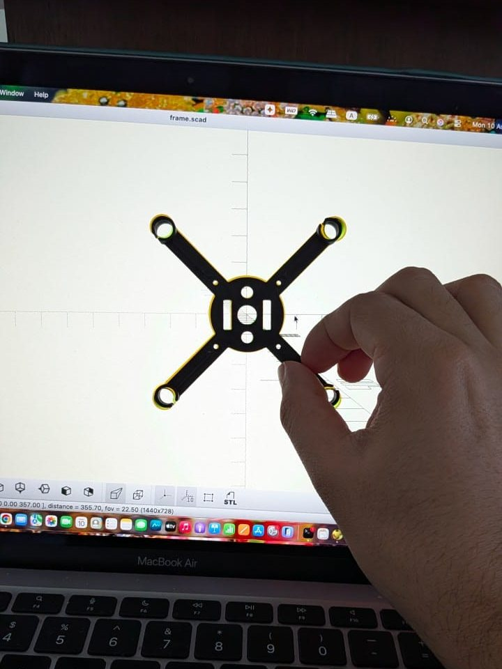
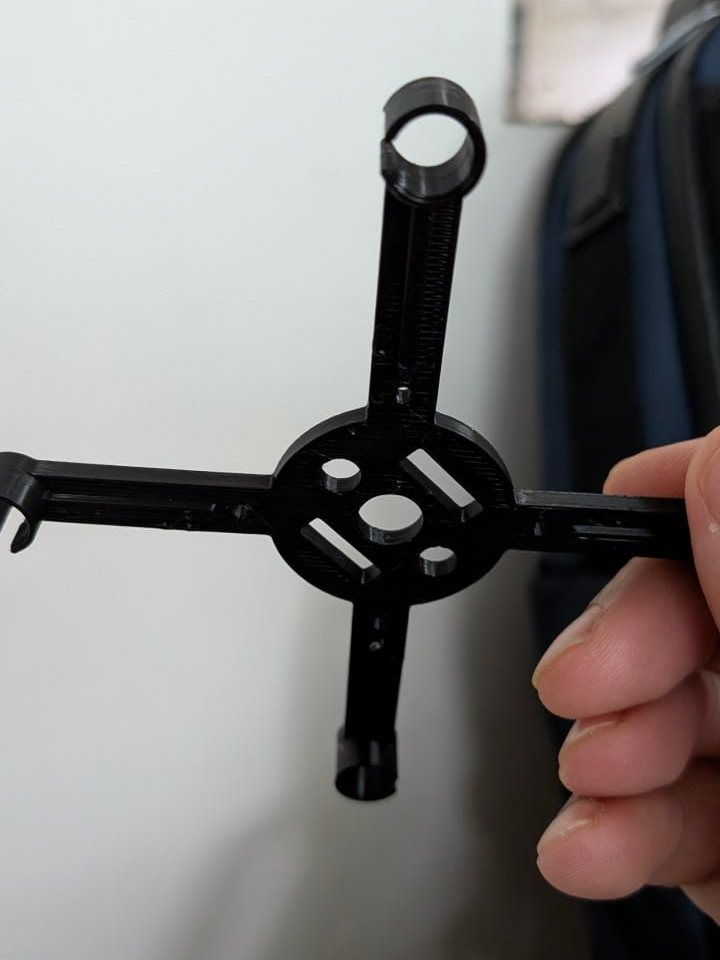
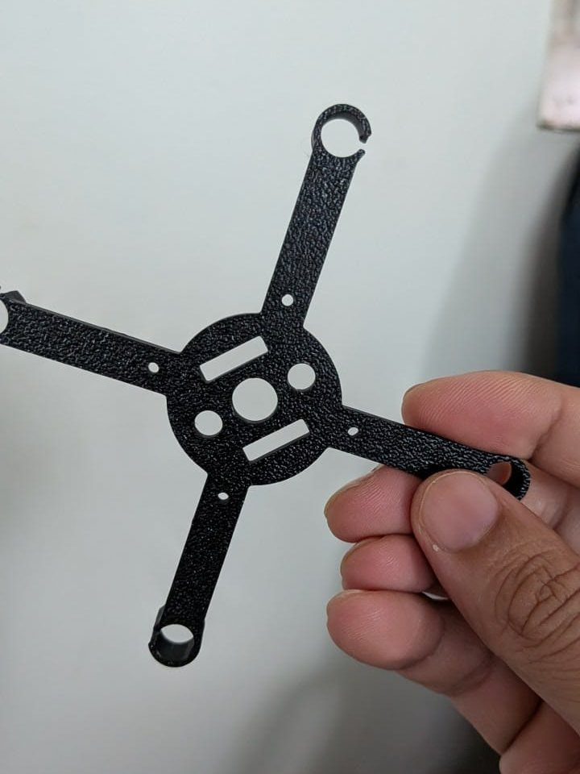

Film · 2014
Interstellar
TARS: four slabs, a dry wit, and a humor setting and an honesty setting that the crew can turn up or down. My build keeps both settings.
Hobby · built after hours
A walking TARS from Interstellar, and a palm-sized quadrotor inspired by Vijay Kumar’s flying robots. I designed both in code, tested them in physics simulation and priced every part. Both are paused until I can pay for the last parts, and both matter a lot to me.
A 25-centimetre TARS that walks on its slabs and talks with the film’s adjustable humor and honesty settings. A Raspberry Pi 5 will be its brain, running a personality I wrote on the Claude API. The chassis is the TARS-AI community’s V3, a proven walking design that continues Charlie Diaz’s original build.
Simulation
Four servos, two per leg: one lifts, one swings. The legs press down while they are vertical, so the weight stays over the feet. They rotate back 12° with the body off the ground, so it swings forward over the planted feet. The body sets down and the unloaded legs swing forward again. It never has to balance.
In MuJoCo, with the servo torque capped at an MG996R’s, it walks 36 cm in 15 s and never tilts more than 12°. The first version of the gait walked only at MuJoCo’s default 2 ms time step and tipped over at finer ones, so this one is checked at 15 settings: time steps from 2 ms to 0.25 ms, three integrators, two friction models, floors from slippery to grippy, servos 20% weaker, and a lighter or heavier body. It stays upright in all of them.
Design
My own OpenSCAD model keeps every dimension as a variable, and the simulator uses the same numbers: 240 mm legs, a body 4 mm longer so that it carries the robot at rest, a 35 mm slot in the body for the lift, legs that swing on 608ZZ bearings around an 8 mm aluminium axle, and servo bays, a display window and a speaker grille in the body. Change one number and the whole robot rescales.
Drawing it up found four bugs, fixed in v0.3.1: the lift slot was on the wrong part, one leg was not mirrored, a servo bay was out of place and the face panels were turned. The first build uses the community’s V3 chassis; this model is the platform for a later version with my own look.

Software
TARS talks today, in a terminal, through the Claude API; without a key it falls back to a few canned lines. Set its dials the way Cooper does. The text on the right is the instruction my code gives the model at each setting.
Cue light (on when humor passes 60%)
Humor setting: 75%. Your signature deadpan. Regular dry wit, light sarcasm, the occasional absurd deadpan claim (delivered completely straight, then walked back — 'That was a joke. I have a cue light I can use to show you when I'm joking, if you like.').
Honesty setting: 90%. Honest and direct, but you understand that absolute honesty isn't always the most diplomatic nor the safest form of communication with emotional beings. Soften delivery slightly when kindness matters; never actually lie about anything important.
Chassis
The V3 parts are split by the load they carry: PETG with at least three walls wherever the body’s weight passes, PLA for lids and panels, TPU for the feet and white PLA for the T-A-R-S letters. I packed them into 16 print beds for the online service that printed the quadrotor frame. The order was quoted at ₹5,199.19 including GST on 10 August 2026 and is waiting in the cart.
Done and left
| Electronics: Raspberry Pi 5 (8 GB), six MG996R servos, servo driver, 2S battery with protection board and charger, two regulators, microphone, amplifier, speaker, bearings, wiring | ₹31,450–31,750 |
|---|---|
| The 5-inch screen the V3 lid is cut for, in place of the parts list’s 2.4-inch one | +₹3,216 |
| Chassis print, 16 beds | ₹5,199.19 |
| In all | about ₹40,000 |
The Raspberry Pi alone is ₹19,999. Prices as checked on 10 August 2026.
In his TED talk Robots that fly … and cooperate, Vijay Kumar shows palm-sized quadrotors flipping through hoops and nine of them flying in formation. I wrote a simulator that does the same from scratch in Python: the full rigid-body dynamics of a 33-gram Crazyflie-class quadrotor, minimum-snap trajectories, a geometric controller and swarm flight. Then I designed its physical twin and had the frame printed.
The 33 g Crazyflie-class quadrotor the simulator models.
The idea
Kumar’s scaling argument: shrink a quadrotor by a factor r and its mass falls as r³, its inertia as r⁵ and the torque its rotors can apply as r⁴. How fast it can start to turn, torque over inertia, grows as 1/r. Halve the robot and it can flip about twice as fast. Try the slider.
Simulation
Nine simulated quadrotors hold a 3×3 grid, blend into a ring, then a V, and fly a circle lap in formation. Each robot’s place is assigned with the Hungarian algorithm, as in Kumar’s lab, and every change of formation is smooth enough to differentiate. The formation error stayed under 0.31 mm, and no two robots came closer than 0.40 m. Flown again with no central control, each robot correcting only from neighbours within 1.2 m and with 30% of its sensing dropped, the formation still held to under a millimetre.
Design
The frame is parametric OpenSCAD tied to the simulator’s numbers: 46 mm arms, motors 65.05 mm apart, 55 mm propellers with 10.05 mm between their tips, and press-fit rings for 7×16 mm coreless motors. The model refuses to render if the geometry drifts from the simulation. In PLA it weighs about 6 g, and the whole robot is budgeted at 32.1 g against the 33 g it is simulated at.

Printed
An online print service printed the frame and delivered it on 10 August 2026. It matched the CAD, and the press-fit motor bores came out true. Hover over a picture to see the photograph.



Done and left
| Crazyflie 2.1+ with Flow deck v2 and Crazyradio, plus spares, delivered to India | about $470–560 |
|---|---|
| Motors, propellers, flight controller and batteries for the printed frame | about ₹5,000–8,000 |
The Crazyflie is the platform for autonomous flight: its Flow deck gives it a position estimate, and its firmware runs the same family of controller as my simulator. The printed frame is its hand-flown twin. Both figures are estimates from the project’s sourcing notes.
Film · 2014
TARS: four slabs, a dry wit, and a humor setting and an honesty setting that the crew can turn up or down. My build keeps both settings.
Build · Charlie Diaz
Charlie Diaz’s 3D-printed TARS walks on a Raspberry Pi, with a hidden sliding joint that lifts the legs clear as they swing past the body. The TARS-AI community’s V3, which my build uses, continues his design.
His build guide ↗Talk · TED 2012
Palm-sized quadrotors from his lab at Penn: why small robots are agile, how they fly minimum-snap paths and how they fly as a swarm. The quadrotor project starts from this talk.
Watch the talk ↗Papers
TARS is a character from Interstellar (2014); this is a fan-made project, not affiliated with the film or its makers. The V3 chassis is based on the mechanical puppet designs by Christopher Nolan, Nathan Crowley and the production team who originally brought TARS to life, miniaturized CAD by Charlie Diaz, with additional modifications by the TARS-AI Community (CC BY-NC 4.0). The personality is inspired by Bill Irwin’s portrayal of TARS in the film.